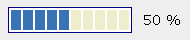

HTML_Progress_UI::setCellAttributes
sets the look and feel of each progress bar cell Synopsisrequire_once 'HTML/Progress/UI.php';
void HTML_Progress_UI::setCellAttributes(
mixed $attributes
int $cells = NULL) DescriptionThis method is used to give a look and feel, such as spacing, size and color,
to the progress meter cells.
$attributes is an associative array or string of HTML tag attributes.
$cell is an integer that allows to identify each cell, and properties
to apply.
Parameter- mixed
$attributes
-
the new cell attributes of the progress meter.
Key-values allowed are: | Attribute |
Format |
Default value |
| id |
string |
progressCell%01s |
| class |
string |
cell |
| spacing |
integer |
2 |
| active-color |
string |
#006600 |
| inactive-color |
string |
#CCCCCC |
| font-family |
string |
Courier, Verdana |
| font-size |
integer |
(compute) |
| color |
string |
#000000 |
| width |
integer |
HB=15, VB=20 (HB:Horizontal Bar, VB:Vertical Bar) |
| height |
integer |
HB=20, VB=15 (HB:Horizontal Bar, VB:Vertical Bar) |
- integer
$cell
-
the cell index if not nul. Otherwise, attributes will be apply for each cell.
ThrowsPossible PEAR_Error values | Error level |
Error code |
Error message |
Solution |
| exception |
HTML_PROGRESS_ERROR_INVALID_INPUT |
invalid input, parameter #2 "$cells" was expecting "integer" |
Fixed the cast of parameter |
| error |
HTML_PROGRESS_ERROR_INVALID_INPUT |
invalid input, parameter #2 "$cells" was expecting "positive" |
Give an integer between zero and cell count |
| error |
HTML_PROGRESS_ERROR_INVALID_INPUT |
invalid input, parameter #2 "$cells" was expecting "less or equal (cell count)" |
Give an integer between zero and cell count |
Note( HTML_Progress >= 1.0 )
 | This function can not be called statically. |
SeeHTML_Progress_UI::getCellAttributes,
HTML_Progress_UI::getCellCount
ExampleExample below (that requires HTML_Progress >= 1.2.0RC3) will produced a progress bar
with custom bluesand cells (see line 10).
 |  |
- <?php
- require_once 'HTML/Progress.php';
-
- $bar = new HTML_Progress();
- $bar->setAnimSpeed(100);
- $bar->setIncrement(10);
- $bar->setBorderPainted(true);
-
- $ui =& $bar->getUI();
- $ui->setCellAttributes('active-color=#3874B4 inactive-color=#EEEECC width=10');
- $ui->setBorderAttributes('width=1 color=navy');
- $ui->setStringAttributes('width=60 font-size=14 background-color=#EEEEEE align=center');
- ?>
- <!DOCTYPE html
- PUBLIC "-//W3C//DTD XHTML 1.0 Strict//EN"
- "http://www.w3c.org/TR/xhtml1/DTD/xhtml1-strict.dtd">
-
- <html xmlns="http://www.w3.org/1999/xhtml" xml:lang="en">
- <head>
- <title>setCellAttributes example</title>
- <style type="text/css">
- <!--
- <?php echo $bar->getStyle(); ?>
- // -->
- </style>
- <script type="text/javascript">
- <!--
- <?php echo $bar->getScript(); ?>
- //-->
- </script>
- </head>
- <body>
-
- <?php
- echo $bar->toHtml();
- $bar->run();
- ?>
-
- </body>
- </html>
| Prev |
Up |
Next |
| HTML_Progress_UI::getCellAttributes |
Reference Guide |
HTML_Progress_UI::getCellCoordinates |
|
|